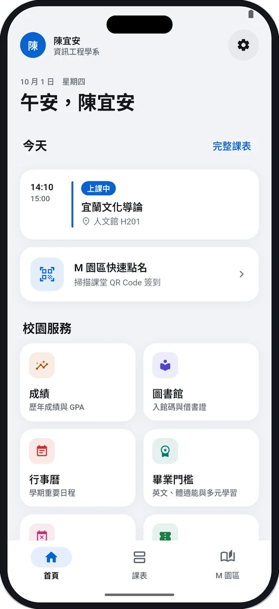
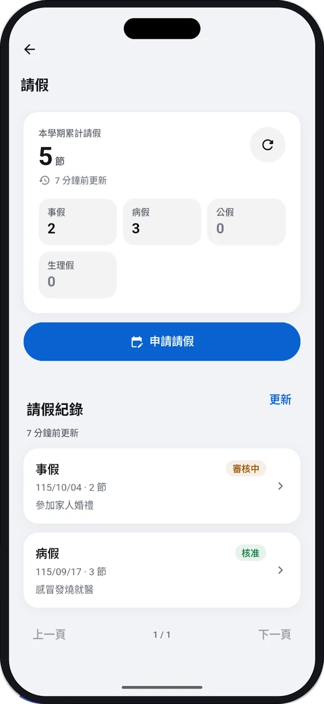

課表與上課提醒
首頁顯示今天的課和教室，整週課表一次看完，上課前自動提醒。
課表、M 園區快速點名、成績、校園信箱、請假與活動報名，用原本的學校帳號登入，一個 App 就搞定。
免費下載 · 用學校帳號登入，不需另外註冊

不用再記一堆網址，也不用在小螢幕上縮放網頁。
首頁顯示今天的課和教室，整週課表一次看完，上課前自動提醒。
公告、教材、作業與成績都在手機上看；掃描課堂 QR Code 立即點名。
收信、寫信、回覆與轉寄，支援附件與搜尋，登入驗證碼自動辨識。
期中、學期與歷年成績，畢業學分、外語、體適能與多元學習進度。
直接在 App 裡申請並上傳證明，簽核到哪一關、誰簽的、退回原因都看得到。
瀏覽與篩選校園活動，報名、修改或取消，分享給同學。
入館 QR Code 與借書條碼，研究小間、討論室等空間設備預約。
主畫面小工具顯示下一堂課，長按圖示直接開啟點名、課表與入館碼。
在學證明、郵件包裹查詢、學期行事曆，也支援深色模式。

NIU-Life 沒有自己的伺服器。校務資料只在你的手機和學校系統之間傳遞。
iPhone 與 Android 都有，免費使用。
需要 iOS 26.2 以上。支援鎖定畫面小工具與課表即時動態。原生 SwiftUI 開發。
需要 Android 8.0 以上。支援主畫面小工具、App 捷徑與上課中通知。
不是。NIU-Life 由個人開發，與國立宜蘭大學沒有隸屬、合作或授權關係。校務資料、點名與報名結果請以學校官方系統為準。
用你原本的國立宜蘭大學校務帳號登入就好，不需要另外註冊。App 會用同一組帳號連到 M 園區、校園信箱與圖書館。
帳號密碼只存在你手機的安全儲存，只用來連線學校系統，不會傳到開發者的伺服器。登出時會一併清除。詳細內容請看隱私權政策。
App 直接連學校的系統，學校系統維護、忙碌或要求重新驗證時，對應的功能就會暫時無法使用。課表、成績等會先顯示上次的資料，稍後再試即可。
兩個版本功能大致相同，各自依平台設計：iOS 版有即時動態與鎖定畫面小工具，Android 版有 App 捷徑與上課中通知。兩邊分別由不同開發者維護。
Android 版請寄信到 hi@windless.me，或到 GitHub 回報；iOS 版請到 iOS 專案的 GitHub 回報。請不要附上密碼或仍可使用的 QR Code。